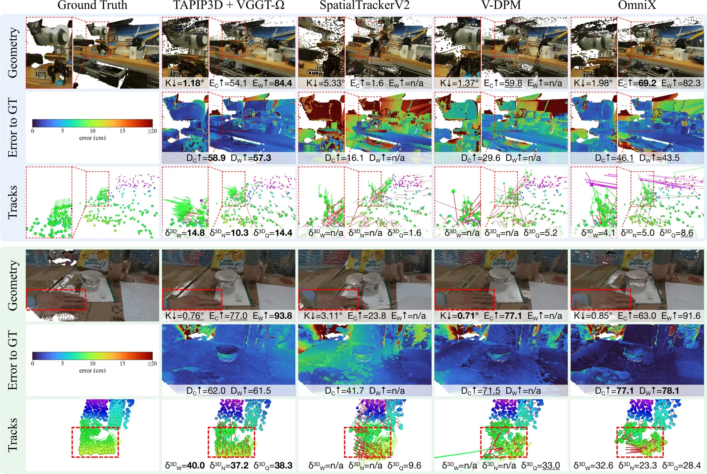
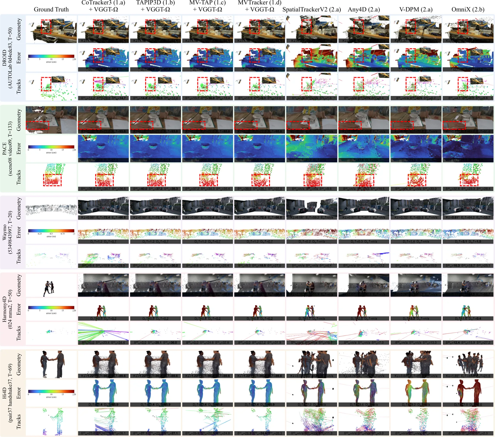
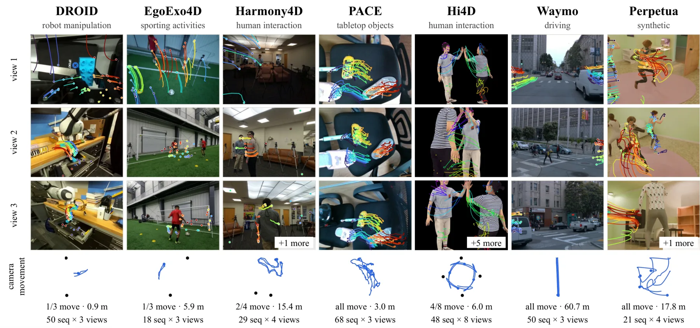
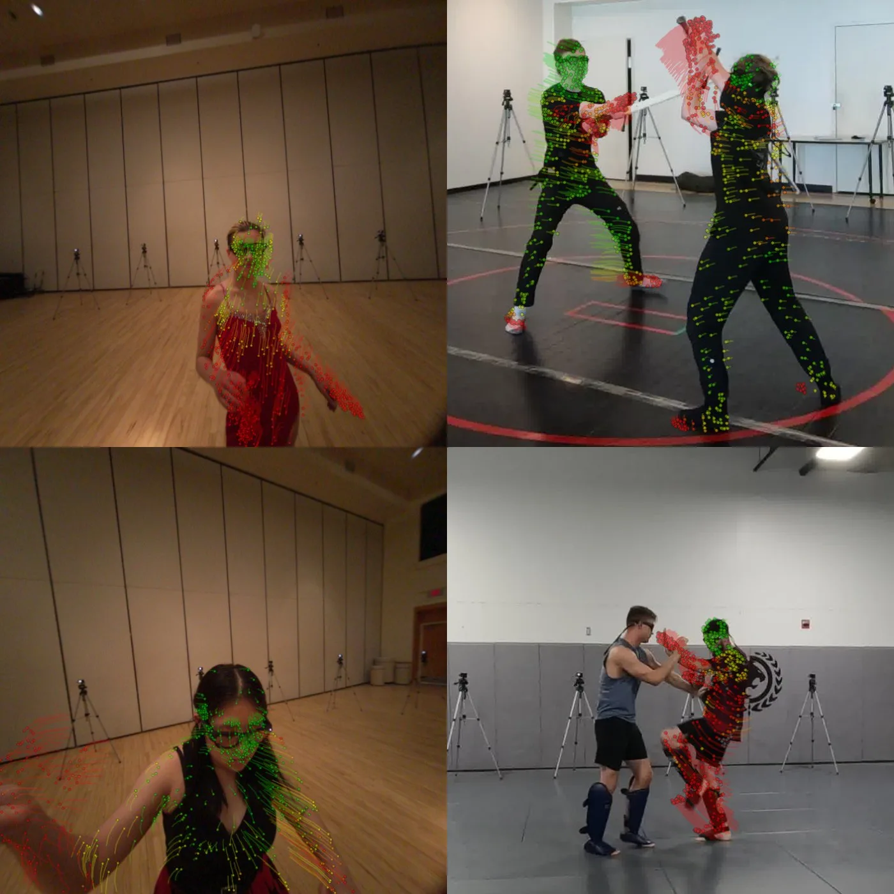

TAPVid-MV：跨多视角追踪 3D 任意点的基准TAPVid-MV: A Benchmark for Tracking Any Point in 3D Across Multiple Views
S 级推荐；已查阅官方 arXiv HTML/PDF 与实验章节。
一句话工作总结
把 3D 点追踪从单视频扩展到多相机、非刚体和长期轨迹，并指出几何恢复是主要瓶颈。
完整单篇海报（待补全）
当前记录尚未达到完整海报质量门槛，暂不把摘要或评分理由冒充方法/实验结论。
待补字段：研究上下文.network（至少 2 条实质条目）。下一次任务需从论文全文或官方 HTML 提取证据后再发布。
摘要
TAPVid-MV 提供在相机运动和多视角同步条件下长期、像素级 3D point tracking 的基准。它同时测量重建与追踪，因而可以区分几何恢复错误和 correspondence 错误。
Multi-camera systems are increasingly practical for robotics, AR/VR, and autonomous driving because complementary views reduce depth ambiguity and preserve visibility under occlusion. Existing point-tracking benchmarks, however, focus on a single video or static multi-camera rigs. None test long-term 3D point tracking across several synchronized views under camera motion. We introduce TAPVid-MV (Tracking Any Point in Video across Multiple Views), the first benchmark for this setting. It contains a curated set of 284 sequences, 1,142 calibrated camera streams, and 109,769 point tracks across seven subsets spanning indoor and outdoor domains, from robotics and human activity to driving and synthetic procedural scenes. We obtain these trajectories using dataset-specific auxiliary modalities: sensor depth, LiDAR, SLAM and SfM points, human meshes, posed object meshes, and simulation. Every sequence and trajectory is visually verified by human annotators. Across more than 30 baselines, no method comes close to solving the task. Surprisingly, existing multi-view point trackers do not consistently outperform monocular point trackers. By evaluating reconstruction and point tracking on the same datasets, TAPVid-MV helps distinguish errors in recovered geometry from errors in point correspondence. Through this joint analysis, we identify geometry recovery as a major bottleneck for accurate 3D point tracking. Beyond multi-view 3D point tracking, our released annotations support monocular 2D and 3D point tracking, future-trajectory prediction, and 4D reconstruction.
中文解读摘录
- 论文原文｜官方 HTML 精读｜score 12
- benchmark 包含 284 sequences、1,142 calibrated camera streams、109,769 point tracks、7 个 subsets，并同时评估 reconstruction 与 tracking。
- 超过 30 个 baseline 尚未接近解决任务；多视角 tracker 也不稳定地优于单目 tracker。对可靠状态估计最重要的信号是：几何恢复、标定、跨视角注册和 correspondence 需要被拆开诊断。
图表/页面预览

{kind=link}

{kind=link}

{kind=link}

{kind=link}
